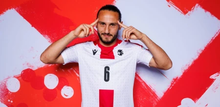

გიორგი ქოჩორაშვილი (დ. 29 ივნისი, 1999, თბილისი, საქართველო) — ქართველი ფეხბურთელი. საქართველოს ეროვნული ნაკრებისა და საფეხბურთო კლუბ „ლევანტეს“ ცენტრალური ნახევარმცველი. 2024 წლის ევროპის ჩემპიონატის მონაწილე საქართველოს ეროვნული ნაკრების შემადგენლობაში.[1]
პროფესიონალური კარიერა 2017 წელს თბილისის „საბურთალოში“ დაიწყო, რომლის შემადგენლობაშიც პირველად იმავე წლის 23 ივლისს ეროვნული ლიგის მე-19 ტურის შეხვედრაში გამოვიდა მინდორზე.
